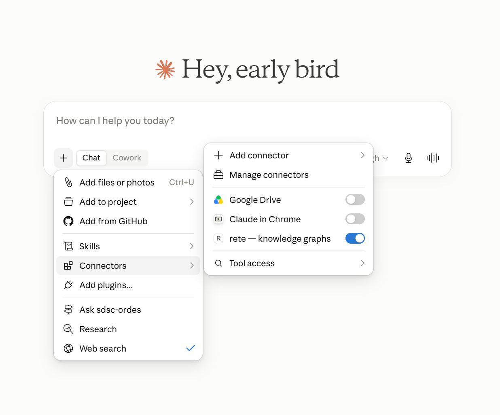
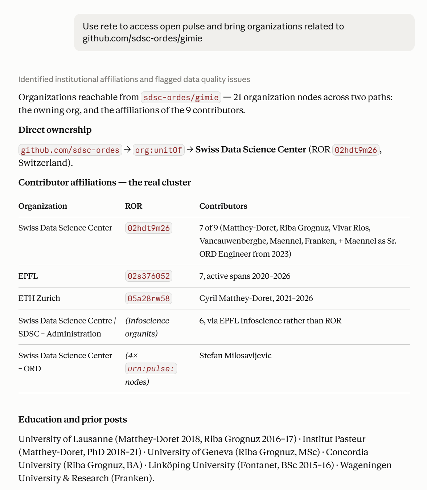
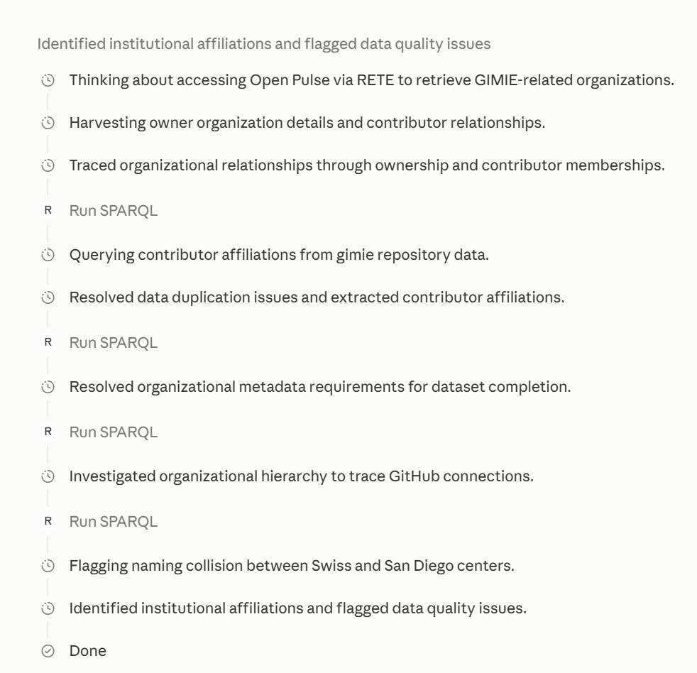

Station (c)
rete-demo.mcpb is a packaged
Model Context Protocol
extension. Installing it puts the whole engine — the same WebAssembly build
the console runs — inside an MCP-capable assistant, with nine tools over the
three graphs of this demonstration. Enabling it is one toggle; after that a
question in plain language is answered from the graph.
Nothing is uploaded and nothing is downloaded whole: the assistant reads the same byte ranges over HTTP that everything else here reads, on your machine.
Four steps, no configuration.
The button above saves rete-demo.mcpb. A
.mcpb is a signed-shaped zip carrying one server file and
the WebAssembly engine — nothing is fetched at install time.
In Claude Desktop: Settings → Extensions → Advanced settings → Install extension…, then pick the downloaded file.
It then appears wherever your host lists connectors, as rete — ISWC 2026 demonstration. Leave Graph folders empty: this build needs no local files.
Try “Use rete to list the datasets you can reach”, then “Which organizations relate to the sdsc-ordes/gimie repository?”


sdsc-ordes/gimie, it resolves ownership
(org:unitOf → Swiss Data Science Center, ROR
02hdt9m26) and the affiliations of nine contributors —
flagging the identifier inconsistencies it meets on the way.
Run SPARQL calls against the remote file, each one visible.
The agent reads the card first to learn the vocabulary — which is what
stops a model inventing predicate names.This is the demonstration build. Its published catalogue holds the three graphs the paper names, and that catalogue is its whole reach — an off-catalogue URL is refused rather than opened.
| Key | Triples | File | Licence |
|---|---|---|---|
| crossref | 3,777,727,303 | 60.2 GB | CC BY 4.0 |
| zenodo-records | 215,396,999 | 2.09 GB | CC-BY-4.0 |
| open-pulse | 3,697,829 | 49 MB | GitHub metadata · ontology © SDSC-ORDES |
The full extension — 80+ published graphs, plus every .rete in
folders you grant it — ships from
github.com/caviri/rete.
Every one of them reads lazily, and every answer reports the bytes and requests it actually spent.
list_datasetsWhat this extension can reachdataset_cardA graph's embedded self-description: what it is, licence, provenance, countsdataset_schemaClasses and relations with counts, from the file's baked schema pyramidexample_queriesRunnable SPARQL the dataset ships withsparql_querySPARQL 1.1, optionally with OWL 2 QL reasoningfind_entitiesResolve a name to entity IRIs by label prefix and full textdescribe_entityEvery statement about one IRI, in both directionsvalidate_shaclValidate SHACL Core shapes against a graphbuild_reteBuild a new .rete from RDF text, offline (needs a granted folder)
A .mcpb is a zip. If your MCP host takes a plain stdio command
instead of a bundle, unpack it and point at the server directly.
unzip rete-demo.mcpb -d rete-demo node rete-demo/server/index.mjs # speaks MCP over stdio # or wire it into any MCP client config: # "command": "node", # "args": ["/abs/path/rete-demo/server/index.mjs"]
The server is one bundled ESM file plus a 3.1 MB .wasm; no
node_modules, no network access at start-up.